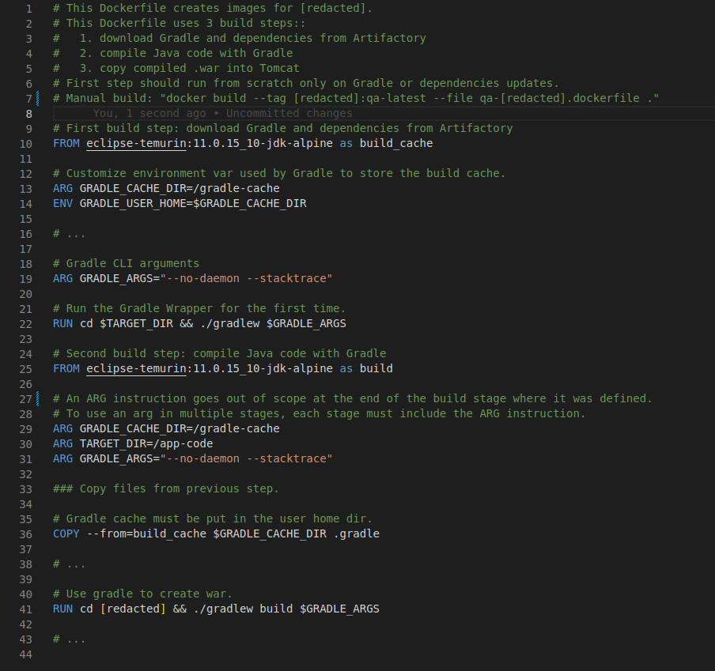
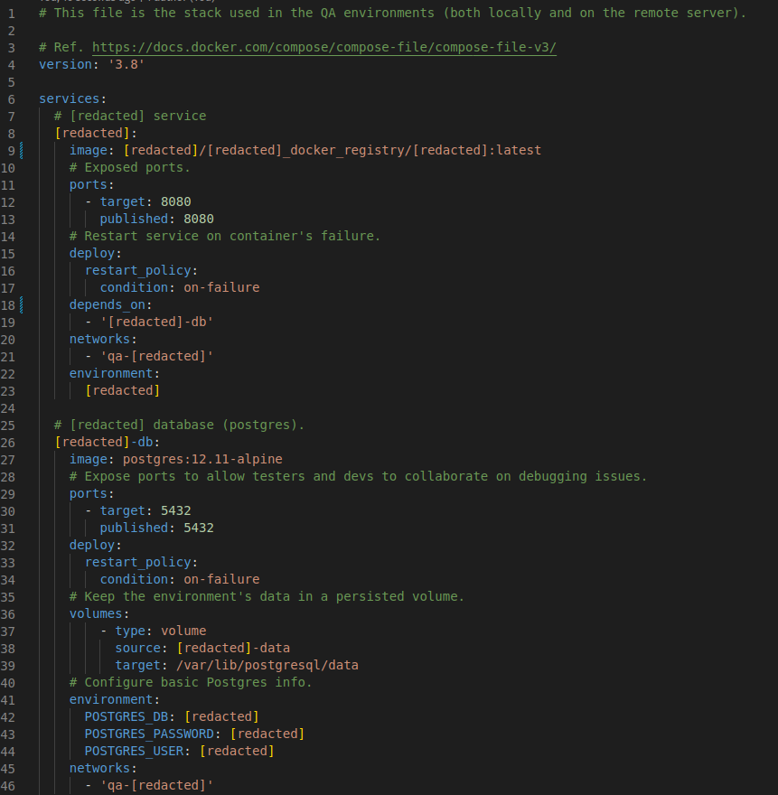

UI components (grids, forms, dialogs, wizards) orchestrated by the backend.
Returned data automatically paginated, sorted and filtered based on user input in the UI.
Used by ~50 devs.
Built with
-
Jenkins management for server built above: CI with scripted pipelines on
dockerized agents
-
Docker images and Docker Compose (legacy) and Swarm with Stacks


-
Eclipse IDE plugins to scaffold projects and other code generation
Web UI built on Angular 7 showing the company's customers data for the Tech Support team.
Learning...
as of
Flutter
AWS Certified Solutions Architect Associate
Things to study in the future...
Order might not be final
AWS Certified Developer Associate
Terraform
Ansible
Rust
Japanese
who knows?
Things I once knew, but could deserve a refresher...